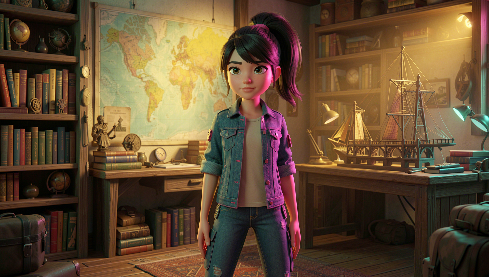

Titanium OS · L'Avventura
Chi è
?
Nina
La ragazza che chiede perché
Brava ragazza… e piccolo genio curioso. Vive in mezzo a mappe, libri e domande.
Titanium OS · L'Avventura
La superpotenza
Chiede «perché?»
…e poi va a vedere davvero. Non si accontenta della prima risposta: apre la porta e guarda dentro.
Titanium OS · L'Avventura
Come la riconosci
Coda alta lunghissima, da ballerina
Giacca di jeans a bottoni, con tocchi rosa
Lentiggini e occhi castano scuro
Sguardo sicuro, un filo sfrontato
Una sola, riconoscibile in ogni avventura: stesso volto, cambia solo… dove la porta la curiosità.

Titanium OS · L'Avventura
Il suo posto nel mondo
La Mappa è il suo OS
Si perde, e si costruisce gli strumenti per ritrovarsi. La Mappa la guida di Pietra in Pietra.
Presto: Themis · Forge